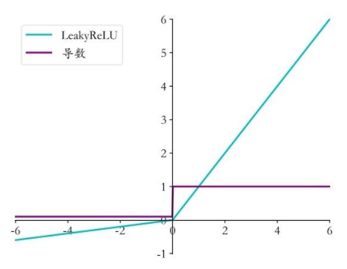

前言
激活函数汇总对比~
随时加更中~
一，定义
激活函数（又叫激励函数）是模型整个结构中的非线性扭曲力，神经网络的每层都会有一个激活函数。
激活函数的主要作用是提供网络的非线性建模能力，如果没有激活函数，那么神经网络只能表达线性映射，此刻即便是有再多的隐藏层，其整个网络跟单层神经网络也是等价的。因此可以说，只有加入了激活函数之后，深度神经网络才具备了分层的非线性的学习能力。
常用的激活函数：Sigmoid函数、tanh函数、Relu函数、Leaky ReLU函数、ELU (Exponential Linear Units) 函数、SoftMax函数、MaxOut函数。
激活函数特点
- 可微性：因为优化方法是基于梯度的，这个性质是必须的
- 单调性：当激活函数是单调的时候，能够保证单层网络是凸函数
- 输出值的范围：激活函数的输出值的范围可以有限也可以无限。当输出值是有限的时候，基于梯度的优化方法会更加稳定，因为特征的表示受有限权值的影响更加显著；当输出值是无限的时候，模型的训练会更加高效，不过在这种情况下，一般需要更小的learning rate
- 非饱和性：（饱和函数有Sigmoid、Tanh等，非饱和函数ReLU等）例如Sigmoid函数求导以后的值很小，两端的值接近为零在反向传播的时候，如果网络的层次过大便会发生梯度消失的问题，使得浅层的参数无法更新。
- 非线性：激活函数必须是非线性的。
- 计算简单：神经元都要经过激活运算的，在随着网络结构越来越庞大、参数量越来越多，激活函数如果计算量小就节约了大量的资源。
二，经典激活函数
1，sigmoid函数
Sigmoid 函数的图像看起来像一个 S 形曲线。
原函数：
导数：
缺点
- 有梯度消失的风险；
- 函数输出不是以 0 为中心，这会降低权重的更新效率；
- Sigmoid 函数执行指数运算，运行较慢。
适用场景
- 值域$(0,1)$，因此它对每个神经元的输出进行了归一化；
- 值域$(0,1)$，Sigmoid 非常合适将预测概率作为输出的模型
- 梯度平滑，避免跳跃的输出值；
- 函数是可微的。这意味着可以找到任意两个点的 sigmoid 曲线的斜率；
2，tanh函数
tanh 激活函数的图像也是 S 形，可以看做放大并平移的Logistic函数

原函数：
导数：
优点
值域$(-1,1)$，并且整个函数以 0 为中心，比 sigmoid 函数更好；
缺点
输入较大或较小时，输出几乎是平滑的并且梯度较小，这不利于权重更新
注意：在一般的二元分类问题中，tanh 函数用于隐藏层，而 sigmoid 函数用于输出层，但这并不是固定的，需要根据特定问题进行调整。
3，ReLU函数

原函数：
导数：
优点
- 当输入为正时，不存在梯度饱和问题。
- 计算速度快，因为 ReLU 函数中只存在线性关系。
- ReLU函数的形式非常简洁，由两段线性函数组合起来后却是非线性的，看似简单，但ReLU的组合却可以逼近任何函数。
- ReLU提出的最大作用是解决sigmoid函数导致的梯度消失问题的，ReLU有单侧抑制，会使一部分神经元的输出为0，这样就造成了网络的稀疏性，减少了参数的相互依存关系，缓解了过拟合问题，另外这也更符合生物神经元的特征。
缺点
- Dead ReLU 问题。当输入为负时，ReLU 完全失效，在正向传播过程中，这不是问题。但是在反向传播过程中，如果输入负数，则梯度将完全为零，sigmoid 函数和 tanh 函数也具有相同的问题；
- 可能会导致神经元死亡，权重无法更新的情况，这种死亡是不可逆转的。
- ReLU 函数不是以 0 为中心的函数。
解释神经元死亡问题
训练神经网络的时候，一旦学习率没有设置好，第一次更新权重的时候，输入是负值，那么这个含有ReLU的神经节点就会死亡，再也不会被激活。因为：ReLU的导数在x>0的时候是1，在x<=0的时候是0。如果x<=0，那么ReLU的输出是0，那么反向传播中梯度也是0，权重就不会被更新，导致神经元不再学习。 也就是说，这个ReLU激活函数在训练中将不可逆转的死亡，导致了训练数据多样化的丢失。
在实际训练中，如果学习率设置的太高，可能会发现网络中40%的神经元都会死掉，且在整个训练集中这些神经元都不会被激活。所以，设置一个合适的较小的学习率，会降低这种情况的发生。为了解决神经元节点死亡的情况，有人提出了Leaky ReLU、P-ReLu、R-ReLU、ELU等激活函数。
4，Leaky RELU函数
Leaky ReLU函数是一种专门设计用于解决神经元“死亡”问题的激活函数。
Rectified NonlinearitiesImprove Neural Network Acoustic Models

原函数：
导数：
优点
- 神经元不会出现死亡的情况。
- Leaky对于所有的输入，神经元不会饱和。
- 由于Leaky的线性、非饱和，在SGD中能够快速收敛。
- 计算速度要快很多，因为Leaky ReLU函数只有线性关系。
缺点
- Leaky ReLU函数中的α，需要通过先验知识人工赋值，通常取0.01。
为什么比ReLU好？
- Leaky ReLU 通过把 x 的非常小的线性分量给予负输入（0.01x）来调整负值的零梯度问题；
- Leaky ReLU 的函数范围是$\infty$（负无穷到正无穷）。
从理论上讲，Leaky ReLU 具有 ReLU 的所有优点，而且 Dead ReLU 不会有任何问题，但在实际操作中，尚未完全证明 Leaky ReLU 总是比 ReLU 更好。
5，ELU函数
paper：Fastand accurate deep network learning by exponential linear units (elus)
ELU 的提出也解决了 ReLU 的问题。与 ReLU 相比，ELU 有负值，这会使激活的平均值接近零。均值激活接近于零可以使学习更快，因为它们使梯度更接近自然梯度。
优点
- 没有 Dead ReLU 问题，输出的平均值接近 0，以 0 为中心；
- 通过减少偏置偏移的影响，使正常梯度更接近于单位自然梯度，从而使均值向零加速学习；
- ELU 在较小的输入下会饱和至负值，从而减少前向传播的变异和信息。
缺点
- 计算强度更高，计算量较大
显然，ELU 具有 ReLU 的所有优点，同样与 Leaky ReLU 类似，尽管理论上比 ReLU 要好，但目前在实践中没有充分的证据表明 ELU 总是比 ReLU 好。
6，Softmax函数
Softmax函数是用于多类分类问题的激活函数，在多类分类问题中，超过两个类标签则需要类成员关系。对于长度为 $K$ 的任意实向量，Softmax函数可以将其压缩为长度为 $K$，值在 $[0,1]$ 范围内，并且向量中元素的总和为1的实向量。
Softmax函数与正常的max函数不同：max函数仅输出最大值，但Softmax函数确保较小的值具有较小的概率，并且不会直接丢弃。Softmax函数的分母结合了原始输出值的所有因子，这意味着Softmax函数获得的各种概率彼此相关。
缺点
- 在零点不可微；
- 负输入的梯度为零，这意味着对于该区域的激活，权重不会在反向传播期间更新，因此会产生永不激活的死亡神经元。
7，Maxout函数
在 Maxout 层，激活函数是输入的最大值，因此只有 2 个 Maxout 节点的多层感知机就可以拟合任意的凸函数。
单个 Maxout 节点可以解释为对一个实值函数进行分段线性近似 (PWL) ，其中函数图上任意两点之间的线段位于图（凸函数）的上方。
可以理解为是神经网络中的一层网络，类似于池化层、卷积层一样。我们也可以把Maxout函数看成是网络的激活函数层。
Maxout激活函数并不是一个固定的函数，不像Sigmod、Relu、Tanh等函数，是一个固定的函数方程.它是一个可学习的激活函数，因为我们 W 参数是学习变化的。它是一个分段线性函数
paper：Maxout Networks
优点
Maxout的拟合能力非常强，可以拟合任意的凸函数。Maxout具有ReLU的所有优点，线性、不饱和性。同时没有ReLU的一些缺点。如：神经元的死亡。
缺点
从上面的激活函数公式中可以看出，每个神经元中有两组(w,b)参数，那么参数量就增加了一倍，这就导致了整体参数的数量激增。
8，swish函数
Swish 的设计受到了 LSTM 和高速网络中 gating 的 sigmoid 函数使用的启发。我们使用相同的 gating 值来简化 gating 机制，这称为 self-gating。
self-gating 的优点在于它只需要简单的标量输入，而普通的 gating 则需要多个标量输入。这使得诸如 Swish 之类的 self-gated 激活函数能够轻松替换以单个标量为输入的激活函数（例如 ReLU），而无需更改隐藏容量或参数数量。Swish 具备无上界、有下界、平滑、非单调的特性。
paper：Searching for Activation Functions

原函数：
- $\beta=0$ Swish激活函数变为线性函数$f(x)=\frac{x}{2} $；
- $\beta=\infty$ Swish激活函数变为 $0$ 或 $x$，相当于Relu;
- 因此，Swish函数可以看作是介于线性函数与ReLU函数之间的平滑函数。
导数：
优点：
- 无界性：有助于防止慢速训练期间，梯度逐渐接近 0 并导致饱和；（同时，有界性也是有优势的，因为有界激活函数可以具有很强的正则化，并且较大的负输入问题也能解决）；
- 导数恒为正；
- 平滑度在优化和泛化中起了重要作用。
9，mish激活函数
一种自正则的非单调神经激活函数，平滑的激活函数允许更好的信息深入神经网络，从而得到更好的准确性和泛化。
paper:Mish: A Self Regularized Non-Monotonic Neural Activation Function

优点
- 无上限，没有上限，这样可以保证没有饱和区域，因此在训练过程中不会有梯度消失的问题，这个和relu后面的激活函数一样；
- 有下限，有下限的话能够保证具有一定的regularization effect，这对于神经网络训练来说是一个很好的特性；
- 非单调性，这个在swish里面也强调过，文章说这种特性能够使得很小的负input在保持负output的同时也能够提高表达能力和梯度流；
- 光滑性，这个主要是相比relu的，relu在0点处不光滑，会在实际优化中遇到一些求解的问题，当然这个应该还是和具体算法有关，大部分我们就把relu=0的时候梯度也变成0了，然后文章继续提到mish的光滑的特性使得在求解和模型泛化性方面相比其他激活函数表现要优良。
三，参考文献
activate or not:learning customized activation
常见的激活函数及其特点
深度学习笔记——常用的激活（激励）函数
四，常见问题
1，如何选择合适的激活函数
- 通常来说，不能把各种激活函数串起来在一个网络中使用。
- 如果使用ReLU，那么一定要小心设置学习率(learning rate),并且要注意不要让网络中出现很多死亡神经元。如果死亡神经元过多的问题不好解决，可以试试Leaky ReLU、PReLU、或者Maxout。
- 尽量不要使用sigmoid激活函数，可以试试tanh。
2，相比于sigmoid函数，tanh激活函数输出关于“零点”对称的好处是什么？
对于sigmoid函数而言，其输出始终为正，这会导致在深度网络训练中模型的收敛速度变慢，因为在反向传播链式求导过程中，权重更新的效率会降低。
此外，sigmoid函数的输出均大于0，作为下层神经元的输入会导致下层输入不是0均值 的，随着网络的加深可能会使得原始数据的分布发生改变。而在深度学习的网络训练中， 经常需要将数据处理成零均值分布的情况，以提高收敛效率，因此tanh函数更加符合这个要求。
sigmoid函数的输出在[0,1]之间，比较适合用于二分类问题。
3，为什么RNN中常用tanh函数作为激活函数而不是ReLU？
RNN中将tanh函数作为激活函数本身就存在梯度消失的问题，而ReLU本就是为了克服梯度消失问题而生的。因为ReLU的导数只能为0或1，而导数为1的时候在RNN中很容易造成梯度爆炸问题。
4，为什么会出现梯度爆炸的问题呢？
因为在RNN中，每个神经元在不同的时刻都共享一个参数W（这点与CNN不同，CNN中每一层都使用独立的参数Wi），因此在前向和反向传播中，每个神经元的输出都会作为下一个时刻本神经元的输入，从某种意义上来讲相当于对其参数矩阵W作了连乘，如果W中有其中一个特征值大于1，则多次累乘之后的结果将非常大，自然就产生了梯度爆炸的问题。
5，那为什么ReLU在CNN中不存在连乘的梯度爆炸问题呢？
因为在CNN中，每一层都有不同的参数$W_i$，有的特征值大于1，有的小于1，在某种意义上可以理解为抵消了梯度爆炸的可能。
6，什么是神经元“死亡”？
Relu的输入值为负的时候，输出始终为0，其一阶导数也始终为0，这样会导致神经元不能更新参数，也就是神经元不学习了，这种现象叫做“Dead Neuron”。
7，如何解决ReLU神经元“死亡”的问题？
①采用Leaky ReLU等激活函数 ②设置较小的学习率进行训练 ③使用momentum优化算法动态调整学习率